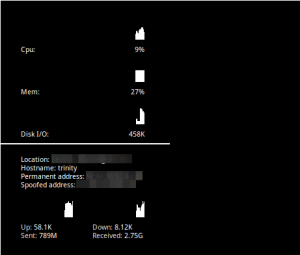

I run a few scripts to ensure my identity stays hidden day to day on my laptop. Here's a few conky scripts to verify things are as they should be.
VPN
Because I don't always know my ip or what my VPN's ip is, I wanted conky to display the location I currently appear at from my VPN. If the location was the same as where I physically am, something's gone wrong. To implement this, I wrote a python script and using ipinfo.io grab my location and print it to conky.
Here's the script I use to pull my location.
import requests
def main():
headers = {
'User-Agent': 'curl/7.9.8 (i686-pc-linux-gnu) libcurl 7.9.8 (OpenSSL 0.9.6b) (ipv6 enabled)'
}
r = requests.get('http://ipinfo.io', headers=headers)
ipdata = r.json()
print(ipdata['city'] + ', ' + ipdata['region'] + ', ' + ipdata['country'])
if __name__ == "__main__":
main()
And here's the conky configuration I use to call it.
${goto 40}Location: ${execpi 600 python ~/scripts/conky/location.py}
http://dnsleaktest.com for an example of how it can be circumvented.
Mac Address
For my mac address I wanted to be able to see my wifi adaptors physical address and what it should be spoofed to. If the two are the same, something's else has gone wrong.
${if_existing /proc/net/route wlan0}
${goto 40}${execpi 600 ethtool -P wlan0}
${endif}
Hostname
I also like to randomise my hostname on startup using this script.
${goto 40}Hostname: ${execpi 1000 hostname}